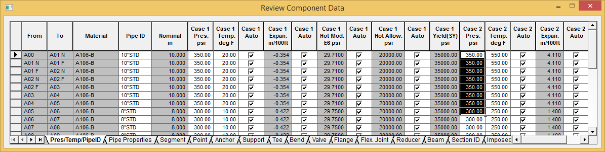

Modifying Pressure and Temperature Loads (Input Grids)
In this section you will learn how to modify pressure and temperature loads using the Pres/Temp/PipeID
grid tab.
- Click on the Pres/Temp/PipeID grid tab.
- Select the values in the Case 2 Pres. psi column for points A00 to A05. You can easily select these values using either of two methods. Click on the 350 {2.4} Case 2 Pres value in row A00, then press and hold [Shift] as you click on the 350{2.4} value in the Case 2 Pres column for row A05, OR click to the left of 350 {2.4} in the Case 2 Pres column for row A00, then hold left mouse button down and drag down to the value in row A05. The range is highlighted as shown in the following figure.

- Modify the values in the selected cells by inputting 370 (psi) {2.6} (n/mm2) and pressing